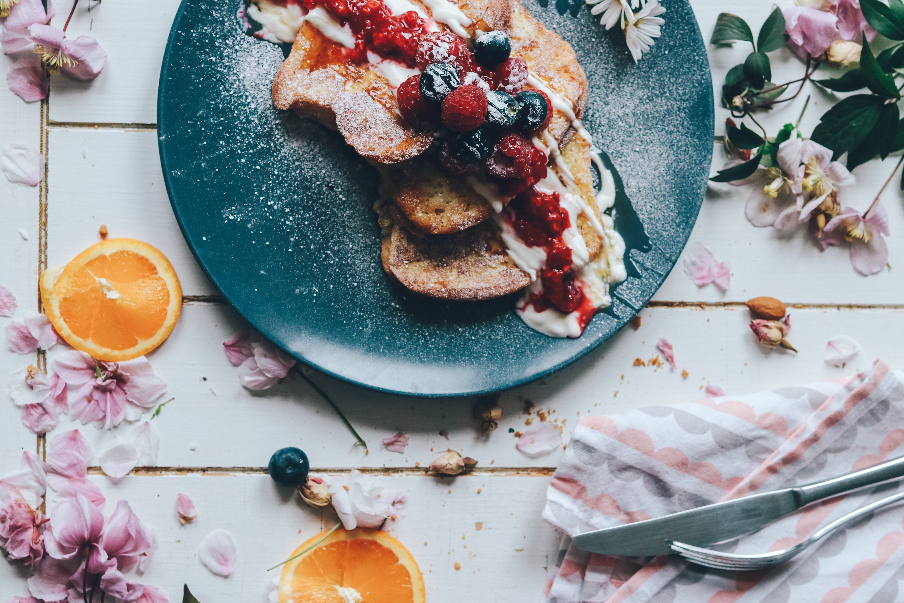

French Toast Mixed Berries

วัตถุดิบและเครื่องปรุง
- ขนมปัง 3-4 แผ่น
- นมรสจืด 250 กรัม
- ไข่ไก่ 1 ฟอง
- ผงชินนามอน 1/4 ช้อนชา
- เกลือ 1/4 ช้อนชา
- เนย 1 ช้อนโต๊ะ
- น้ำตาล 4 ช้อนโต๊ะ
- มิกซ์เบอร์รี่ 100 กรัม
- น้ำมะนาว 1/2 ช้อนชา
วิธีทำ
- ขั้นตอนการทำตัวเฟรนช์โทสต์ เริ่มจากเทนมใส่ภาชนะผสม ตามด้วยไข่ไก่ ปรุงรสด้วยเกลือและผงชินนามอน คนให้เข้ากัน นำขนมปังมาจุ่มลงส่วนผสมที่ทำไว้เมื่อสักครู่ โดยจุ่มให้ทั่วทั้งสองด้าน
- ตั้งกระทะแล้วใส่เนยลงไป กวนให้ทั่วกระทะ จากนั้นนำขนมปังลงไปย่างให้ขึ้นสีทั้งสองด้าน เสร็จแล้วนำใส่จานและพักไว้
- ขั้นตอนต่อมาเตรียมทำซอสมิกซ์เบอร์รี่ โดยนำมิกซ์เบอร์รี่ซอสใส่ลงไปในหม้อ ต้มไปเรื่อย ๆ จนเดือด ในระหว่างนี้หมั่นคนอยู่เรื่อย ๆ
- เมื่อซอสเริ่มข้นหนืดแล้ว ใส่มะนาวลงไป เสร็จแล้วเตรียมจัดใส่จาน จัดขนมปังลงในจานให้สวยงาม และราดซอสมิกซ์เบอร์รี่ลงไป โรยหน้าด้วยมิกซ์เบอร์รี่ ถือเป็นอันเสร็จ